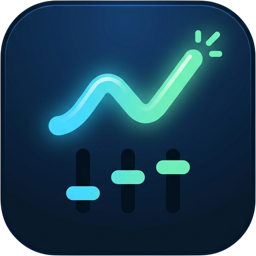

<!doctype html>
<html lang="en">
<meta charset="utf-8">
<meta name="viewport" content="width=device-width,initial-scale=1">
<title>Crash Games</title>
<link rel="icon" type="image/png" sizes="64x64" href="favicon.png">
<link rel="apple-touch-icon" href="apple-touch-icon.png">
<style>
/* The Composer's Layout tab on its own: the games, a viewport to size, and the panels a
   player may or may not see. Nothing here talks to a server, so it can live on any static host. */
:root{--inspector-bg:#151a21;--inspector-border:#303844;--inspector-muted:#98a5b5;--inspector-accent:#71caff;--inspector-radius:4px;--inspector-control:32px}
[hidden]{display:none!important}*{box-sizing:border-box}html,body{height:100%;margin:0}body{display:grid;grid-template-columns:280px minmax(0,1fr);overflow:hidden;background:#0b1017;color:#e2e7ee;font:13px/1.45 system-ui}
header{min-height:0;overflow:auto;display:flex;flex-direction:column;background:var(--inspector-bg);border-right:1px solid var(--inspector-border);padding:20px 16px}
header>*{flex:none}
h1{display:flex;align-items:center;gap:10px;font-size:15px;letter-spacing:.02em;margin:0 0 20px}h1 img{flex:none;border-radius:7px}
h1 span{min-width:0}h1 small{display:block;font-size:10px;font-weight:400;letter-spacing:0;color:var(--inspector-muted);margin-top:4px;white-space:nowrap}
.toolbar{display:grid;gap:8px;padding:16px 0;border-top:1px solid var(--inspector-border)}
.toolbar>strong{font-size:10px;text-transform:uppercase;letter-spacing:.12em;color:var(--inspector-muted);margin-bottom:4px}
.property{display:grid;grid-template-columns:54px minmax(0,1fr);align-items:center;gap:8px;color:var(--inspector-muted)}
button,input,select{font:inherit;color:#e2e7ee;background:#202732;border:1px solid var(--inspector-border);border-radius:var(--inspector-radius);padding:5px 8px;min-height:var(--inspector-control);min-width:0;max-width:100%}
select{appearance:none;-webkit-appearance:none;padding-right:36px;background-image:url("data:image/svg+xml,%3Csvg xmlns='http://www.w3.org/2000/svg' viewBox='0 0 16 16'%3E%3Cpath d='m4 6 4 4 4-4' fill='none' stroke='%23c7d0dc' stroke-width='1.5' stroke-linecap='round' stroke-linejoin='round'/%3E%3C/svg%3E");background-repeat:no-repeat;background-position:right 12px center;background-size:14px 14px}
button{cursor:pointer;font:12px ui-monospace,SFMono-Regular,Consolas,monospace}button:hover{background:#2a3442}button[aria-pressed=true]{border-color:var(--inspector-accent);background:#19374b;color:#c7ecff}
button:focus-visible,input:focus-visible,select:focus-visible{outline:2px solid var(--inspector-accent);outline-offset:2px}
.game{border-top:0;padding-top:0}#game{width:100%}
.subhead{display:block;margin:12px 0 -2px;font-size:11px;font-style:normal;letter-spacing:.06em;text-transform:uppercase;color:var(--inspector-muted)}
.presets{display:grid;grid-template-columns:repeat(4,minmax(0,1fr));gap:4px}
.presets button{display:grid;gap:1px;line-height:1.15;padding:4px 2px}
.presets b{font:600 9px system-ui;letter-spacing:.1em;color:var(--inspector-muted)}
.presets button[aria-pressed=true] b{color:inherit}
.presets button[data-break]{border-bottom-color:var(--inspector-accent)}input[type=number]{width:100%;font-family:ui-monospace,SFMono-Regular,Consolas,monospace}input[type=range]{width:100%;padding:0;accent-color:var(--inspector-accent)}
main{min-width:0;min-height:0;padding:24px;overflow:auto;background-image:radial-gradient(#ffffff12 1px,transparent 1px);background-size:16px 16px}
#frame{display:block;width:100%;height:850px;margin:0 auto;border:1px solid var(--inspector-border);border-radius:4px;background:#0d2032}
small{color:var(--inspector-muted);font-size:11px}#size{font:11px ui-monospace,SFMono-Regular,Consolas,monospace;color:var(--inspector-accent)}
.visibility-option{display:flex;align-items:center;gap:8px;min-height:32px;cursor:pointer}.visibility-option input{width:16px;height:16px;min-height:0;margin:0;padding:0;accent-color:var(--inspector-accent)}
#open{display:block;text-align:center;color:var(--inspector-accent);text-decoration:none;font:12px ui-monospace,SFMono-Regular,Consolas,monospace;padding:6px;border:1px solid var(--inspector-border);border-radius:var(--inspector-radius)}#open:hover{background:#2a3442}
@media(pointer:coarse){:root{--inspector-control:44px}.visibility-option{min-height:44px}}
@media(max-width:640px){body{grid-template-columns:220px minmax(320px,1fr);overflow-x:auto}header{padding:16px 12px}main{padding:12px}}
</style>
<header>
<h1><span>Crash Games <small>PIXIJS · BROWSER BUILDS</small></span></h1>
<div class="toolbar game" aria-label="Game"><strong>Game</strong><select id="game" aria-label="Game"></select><a id="open" href="#" target="_blank" rel="noopener">Open full screen ↗</a></div>
<div class="toolbar" aria-label="Viewport"><strong>Viewport</strong><div class="presets">
<button data-width="360"><b>XS</b>360</button><button data-width="430"><b>S</b>430</button>
<button data-width="600" data-break><b>M</b>600</button><button data-width="768"><b>L</b>768</button>
<button data-width="960" data-break><b>XL</b>960</button><button data-width="1024"><b>2XL</b>1024</button>
<button data-width="1440" data-break><b>3XL</b>1440</button><button id="fluid" aria-pressed="true"><b>AUTO</b>Fluid</button></div>
<small>Marked widths are where the kit layout changes: 600, 960 and 1440 px.</small>
<label class="property">Width <input id="width" type="number" min="320" max="2560" value="1024"></label>
<input id="range" aria-label="Viewport width" type="range" min="320" max="1920" value="1024">
<label class="property">Height <input id="height" type="number" min="360" max="1400" value="850"></label>
<button id="rotate" type="button">Swap width and height</button>
<span id="size"></span>
</div>
<div class="toolbar" aria-label="Panels"><strong>Panels the player sees</strong>
<label class="visibility-option"><input type="checkbox" data-flag="leaderboard" checked>Live wins</label>
<label class="visibility-option"><input type="checkbox" data-flag="history" checked>Round history</label>
<label class="visibility-option"><input type="checkbox" data-flag="personal_record" checked>My record</label>
<label class="visibility-option"><input type="checkbox" data-flag="online_count" checked>Online count</label>
<em class="subhead">Bet panel features</em>
<label class="visibility-option"><input type="checkbox" data-feature="auto" checked>Auto play</label>
<label class="visibility-option"><input type="checkbox" data-feature="difficulty" checked>Difficulty level</label>
<label class="visibility-option"><input type="checkbox" data-feature="presets" checked>Preset amounts</label>
<small>Features are read by the game at start, so changing one reloads it.</small>
</div>
</header>
<main><iframe id="frame" title="Game" src="about:blank"></iframe></main>
<script>
(()=>{
'use strict';
const $=s=>document.querySelector(s),$$=s=>[...document.querySelectorAll(s)];
const GAMES=[
 {id:'road',title:'Goat Road'},{id:'fruits',title:'Explosive Fruits'},{id:'fish',title:'Fish Master'},
 {id:'gold',title:'Goat Gold'},{id:'fuel',title:'Fuel Run'}
];
const frame=$('#frame'),game=$('#game'),width=$('#width'),range=$('#range'),height=$('#height');
game.replaceChildren(...GAMES.map(g=>new Option(g.title,g.id)));
// The address bar carries the game, so a link opens on the one meant.
const initial=new URLSearchParams(location.hash.slice(1)).get('game');
if(GAMES.some(g=>g.id===initial))game.value=initial;
const featureQuery=()=>$$('[data-feature]').filter(n=>!n.checked).map(n=>'&'+n.dataset.feature+'=0').join('');
const url=()=>'games/'+game.value+'/index.html?ui-kit=1'+featureQuery();
function load(){
 history.replaceState(null,'','#game='+game.value);
 $('#open').href=url();
 // Blank first: a game left running would keep its audio going under the next one.
 frame.src='about:blank';
 setTimeout(()=>{frame.src=url()},60);
}
game.onchange=load;
// Panels are switched in the running game, as the Composer does, through the kit's own instance.
function sendFlags(){
 const ui=frame.contentWindow?.CrashUI?.instance;if(!ui)return;
 for(const n of $$('[data-flag]'))ui.send('flag',{key:n.dataset.flag,value:n.checked});
}
$$('[data-flag]').forEach(n=>n.onchange=sendFlags);
$$('[data-feature]').forEach(n=>n.onchange=load);
frame.addEventListener('load',()=>{
 // The game's UI appears once its assets have landed; keep asking until it is there.
 let tries=0;const timer=setInterval(()=>{if(frame.contentWindow?.CrashUI?.instance||++tries>200){clearInterval(timer);sendFlags()}},100);
});
function setWidth(value){
 value=Math.max(320,Math.min(2560,Number(value)||360));
 frame.style.width=value+'px';width.value=value;range.value=value;
 $$('[data-width]').forEach(b=>b.setAttribute('aria-pressed',String(Number(b.dataset.width)===value)));
 $('#fluid').setAttribute('aria-pressed','false');
}
$$('[data-width]').forEach(b=>b.onclick=()=>setWidth(b.dataset.width));
width.onchange=()=>setWidth(width.value);range.oninput=()=>setWidth(range.value);
$('#fluid').onclick=()=>{frame.style.width='100%';$$('[data-width]').forEach(b=>b.setAttribute('aria-pressed','false'));$('#fluid').setAttribute('aria-pressed','true')};
function setHeight(value){const px=Math.max(360,Math.min(1400,Number(value)||850));frame.style.height=px+'px';height.value=px}
height.onchange=e=>setHeight(e.target.value);
// Swap the requested sizes, not the measured ones: the frame border would shave 2px each turn.
$('#rotate').onclick=()=>{const w=Number(width.value)||Math.round(frame.clientWidth),h=Number(height.value)||Math.round(frame.clientHeight);setWidth(h);setHeight(w)};
new ResizeObserver(()=>{$('#size').textContent=Math.round(frame.clientWidth)+' × '+Math.round(frame.clientHeight)}).observe(frame);
load();
})();
</script>
</html>
